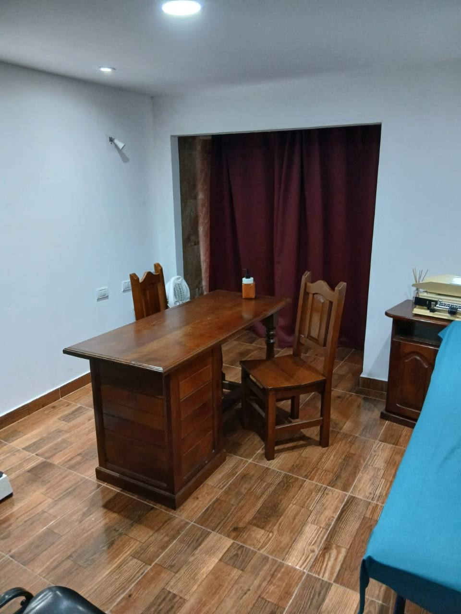
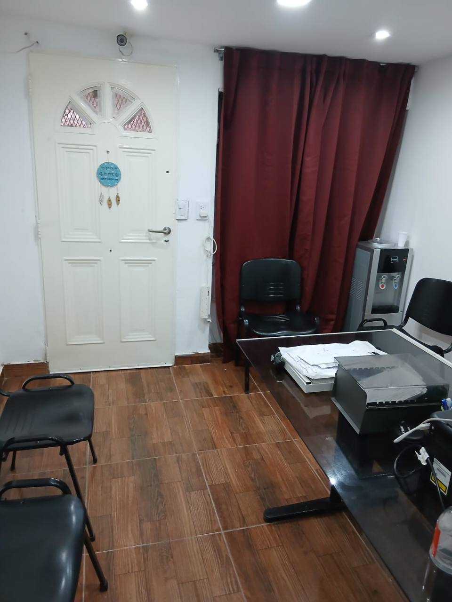
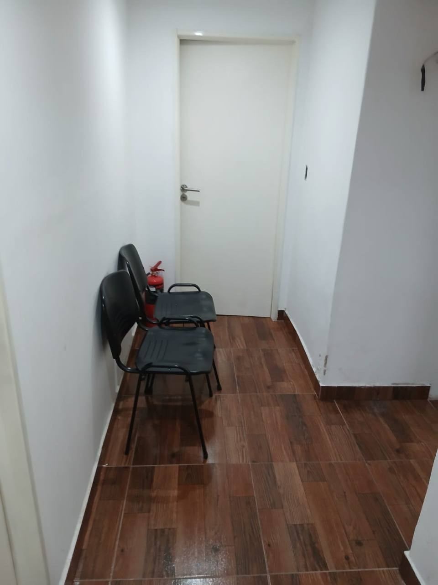

Escucha real
Tu relato también es información clínica.
Un espacio donde la prioridad es brindar la mejor opción disponible a tu motivo de consulta. Informándote para que vos decidas.
Medicina humana
Escucha, criterio y seguimiento real
ModalidadPresencial y online
másters de
especialización


Soy la Dra. Vanesa Klimaszewski, especialista en Medicina General y Familiar, con especial dedicación a la Diabetología.
Entiendo la salud desde una mirada amplia que abarca los síntomas clínicos y las emociones del paciente.
Tu relato también es información clínica.
Prevención, tratamiento, decisiones conjuntas con especial respeto a la calidad de vida.
Decisiones comprensibles y seguimiento.
Consultas programadas para resolver necesidades puntuales y acompañar procesos que requieren continuidad.
Controles, prevención y atención de problemas frecuentes en cada etapa.
ConsultarPrevención, diagnóstico, control y acompañamiento para evitar o retrasar complicaciones, incluida la prevención del pie diabético.
ConsultarAtención integral con continuidad del cuidado y seguimiento, basada en el respeto a los adultos mayores.
ConsultarAtención particular e individualizada que se ajuste a TU motivo de consulta.
ConsultarOrientación y seguimiento cuando no se requiere examen presencial.
ConsultarAtención en Tigre para pacientes con dificultad para trasladarse.
ConsultarPresencial en Tigre, por videoconsulta o a domicilio según cada situación.
La experiencia importa cuando se convierte en explicaciones claras, decisiones conjuntas y continuidad para cada paciente.
Formación universitariaMédica · Facultad de Medicina, UBA
EspecialidadMedicina General y Familiar
PosgradosMáster en Diabetes y Máster en Cuidados Paliativos
Trayectoria hospitalariaEx jefa de residentes · Hospital Fernández
Compromiso profesionalFormación continua · Empatía · Buen trato
Un proceso simple, humano y compartido para que siempre sepas qué estamos haciendo y por qué.
Tu historia, tus síntomas y lo que hoy te preocupa.
Con criterio clínico, examen y estudios si corresponden.
Definimos juntos un plan comprensible y posible.
Seguimos la evolución y ajustamos cuando hace falta.
Ideas esenciales para entender tu salud y llegar a la consulta con preguntas más claras.
Una guía breve para aprovechar mejor la consulta preventiva.
Leer el artículo Videoconsulta
VideoconsultaSeguimientos, resultados y situaciones que pueden resolverse a distancia.
Leer el artículo Bienestar
BienestarCómo convertir una indicación médica en un plan que funcione para vos.
Leer el artículoAtención presencial en Rincón de Milberg, en un entorno cercano, reservado y con turnos programados.

Completá el formulario y tu consulta llegará directamente a la Dra. Vanesa. También podés escribir por WhatsApp.
La información práctica que necesitás para coordinar tu atención con tranquilidad.
Preguntar por WhatsAppPodés completar el formulario o escribir por WhatsApp al +54 9 11 3730-5610. La comunicación es únicamente por mensaje.
Sí. Si el motivo no requiere examen físico, se puede coordinar una videoconsulta.
Sí, se coordinan domicilios programados en Tigre para personas con dificultad para trasladarse.
En Caracas 1480, Rincón de Milberg, Tigre, siempre con turno programado.
 Turnos
Turnos